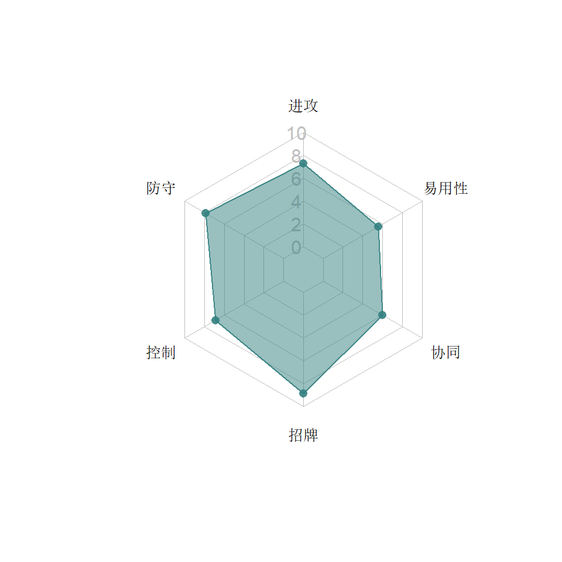

3  战术系
战术系
正如游戏的加载界面中说的“以其人之道还治其人之身”，战术系机器人拥凭借对战局的适应性来克制敌人的优势，而且大部分战术机器人不受他们上一类别（爆破系）的技能克制，从整体上来看也是被克制得最少的类别。
类别关键字：破甲，加攻、护甲、抗性、驱散
3.1 战擎

3.1.1 特点分析
战擎是所有人第一个拿到的机器人，上手容易，操作顺畅，标准的速攻高输出选手。作为汽车人的领袖，协同方面也有很多亮点，如救护车的回血，让战擎+救护车的“小强组合”长期受到玩家的追捧。后期厂商还给他添加了盖世擎天柱的组合协同，让战擎历久弥新，仍然占据着超一线的角色。
但是作为最早发布的角色，战擎技能的中文翻译一直是错的，官方并没有改正，好在大部分玩家也不是很在意，因为战擎的使用根本不费脑，甚至不太需要知道这些技能具体怎么用。
3.1.1.1 能力
- 发动一次重击时，按队友数量获得攻击加成，是战擎自己得到攻击加成，游戏中的中文翻译是错的。
- 主动防御时：
- 获得一个护甲
- 根据队友的数量，增加护甲抵御近战攻击的强度。这个技能指的是战擎获得护甲的强度，而非游戏中文翻译说的给队友加护甲
- 连击数越多，破甲时间持续越长（每多一连击，破甲时间延长1.5%，与级别无关）。这个技能没有得到什么关注，可能也是因为战擎的短战斗只要攒两个S2就基本上结束了，长战斗时一般都会上S3永久破甲。也许只有在超长的战斗中，这个能力可以扩大永久破甲之上叠加的破甲的时间。
- 3个特殊技的斧头攻击都可以触发破甲：
- S1（能量切割）后两下是斧头攻击。并且S1之后还可以获得加攻，牺牲的队友越多，加攻越多。
- S2（斧击）就是三板斧。输出巨大，短战斗一招制敌。
- S3（不计代价）最后一击必然施加破甲，并且是永久破甲。配合招牌能力大幅度提高输出。
3.1.1.2 招牌
突破口：暴击破甲状态下的对手会造成流血，和侦查和战士系不同，战擎是出了暴击就100%流血！事实上战擎的流血无论在时间上和强度上都不输那些靠流血吃饭的侦查和战士。配合S3的永久破甲（俗称脱衣打法），再加深度创伤精通，进一步提高输出。
3.1.1.3 协同
2022年4月修订中，协同部分改为只写受益和双向型，即“当前角色从其他角色得到的协同”，不再包含授益，即“当前角色给其他角色的协同”（这些写在对应角色的受益协同中）。默认为受益，双向的特别标注。
战擎作为领袖，协同也很有领袖的样子：
- 敌人（声波，汽车大师，战威，震天尊）：加攻击。可能早期机器人设计得比较细致，后期这类敌人间的协同都是做成双向的。
- 首席医疗官（救护车）。擎天柱变形时（指重击和S3时1）随机获得回血（触发回血时，不触发加攻），血越少回血概率越高，最高概率100%（也就是理论上只剩1血时）。本来单兵能力就很强的战擎拥有续航能力简直如虎添翼。实测可以上多个救护车，提高触发回血的概率和回血强度（配四个救护车可以一次出三层回血，回血15%）。
- 榜样（小黄蜂）：加护甲
- 中尉（爵士、警车）：加护甲和加攻
- 擎天柱组合金刚：开局带一定百分比的能量（五星40%、四星30%，三星20%，二星10%）。2022年8月上线的新协同，可以说是大大改变了战况，提升了擎天柱的协同体验。百炼为战出组合金刚的呼声一直很高，但是明眼人都看得出来百炼是格斗游戏，不像地球之战，所以一个巨大的组合金刚怎么跟标准金刚去打呢？但适逢飞毛腿的发布，让这个游戏终于有五个同属一个组合金刚的人物2，这个新协同也可谓卡邦在“组合金刚”方面的一种探索。此协同要求：
- 队伍中至少有两人
- 必须要有一个战擎
- 其余成员可以在战擎、幻影、飞毛腿、G1铁皮、警车之中选择，可以重复，但不能选择之外的角色，也不能队伍中全是战擎，否则协同不起作用。而很快玩家就发现，带多个战擎可以让开局的能量更多，具体来说，五星和四星不能叠加，但是三星和二星可以与五星或四星叠加，并且明显比标称的百分比要高。于是队伍中有五三或者四三战擎，所有成员开局可以出S2！于是就有人开发出了盟战用五星、三星战擎加五星警车去打，虽然队伍中只有两个有效人物，但是战擎开局有个S2起步，可以迅速启动S3永久破甲，警车则可以早早S2糊脸，或者后撤上到S3锁气，盟战难度70以下这个组合基本上是横着走（而且明显这个协同不止加能量，攻击力和血量也大幅度提升了，从而战擎的战力几乎成倍地增长）。推图用这个组合，低难度的关卡可以警车一路S2解决战斗，或者把三星二星战擎都上，配四星或五星战擎主力，开局打几拳就已经S3了。
- 拓展应用：上述擎天柱组合金刚的加气协同，如果队伍中换一个不是组合金刚成员的角色，就会使得开局没有能量。但是玩家又发现，虽然没有了能量，但是加血和加攻一点不少。于是对于长战斗来说，可以牺牲开局的气，换上一到两名救护车，给战擎增加续航。例如：五星，三星战擎，任意警车，五星四星救护车。（其实归根到底应该是卡邦设计的这个协同有bug，目前来说还是可以多加利用）
3.1.2 推荐打法
3.1.2.2 长战斗
除了对付猩猩，基本上都可以先S3永久破甲，然后回到短战斗的打法。在出S技前争取用安全的方式出重击加攻，再找机会连S技。
如果连击数可以保持在很高，可以用S1做输出，否则S2。传奇中曾经有一种打法就是带四个救护车，先把2、3、4星的上去送死3，用于加强战擎的S1伤害。
如果配合救护车来打长战斗，切记一次没有触发回血时，不要反复尝试重击，要在攻击加成计时结束后再尝试。
3.2 大黄蜂

3.2.1 特点分析
战术黄的速度快，规避能力强，根据击倒次数逐渐加攻的能力让他在长战斗中越来越强。但由于官方从游戏一开始就雪藏他的四星版本，直到很晚才真正被大家所了解。他的五星版本依然采用了较困难的方式（金轮水晶搏概率）来获取，直到泰坦货币的发布，才以13万的价格逐渐走向平民玩家。同时因为8.0版的加强后，大黄蜂已经慢慢被玩家认可。
3.2.1.1 能力
- 自适应型的规避，可以在受到攻击时有针对性地脱身。
- 所谓自适应，指的是他会在两种规避（近战、远程）之间切换，并且任何时间一定有一种规避能力在身（被驱散了也会回来）：开场是近战规避（13.3~25.5%） ，受到远程攻击后切换为远程规避（11.3~21.6%），再受到近战攻击时又切换为近战，切换有一定的延时，可以通过提升招牌等级来缩短。这就让大黄蜂有了很好的逃生能力：想要有效在大黄蜂上打输出，首先开场要用小枪（或者远程重击）命中他，让他切换成远程规避，才能放心地打近战连击，然而在打中第一下近战的时候，他又开始切换回近战规避了。所以如果要在近战后连S技的话，可能无法打满5下。在实际对战电脑高觉醒大黄蜂的时候，要时刻盯着他的规避类型，有机会也不能太贪。有镇静精通的话会放心一些。
- 在自己使用大黄蜂的时候，由于作为玩家并不知道他什么时候会触发规避，只能说规避了是惊喜。并且平时挨打5下等着打回头的习惯不好用了——说不定对方还没打到几下大黄蜂就自己脱身了，这时要尽快反击。
- 每击倒敌人一次堆积一层永久加攻，上限原为15层，后暗改为20层，第21层开始会有倒计时。
- S1（速踢）：最初没有额外效果，在8.0中改成每一击有概率施加一层破甲
- S2（漏洞射击）和S3（炮弹冲击波）配有震击，对护甲越高的敌人震击强度越高。S2比S3的效果更好。
- 每个死亡的队友让大黄蜂加攻，所以在推图中，上得越晚越好。
3.2.1.2 招牌
招牌能力缩短两种规避的切换时间，方便受到连招时迅速脱身。同时在闪避近战时临时获得加攻。由于5星大黄蜂的获得方式比较少，所以招牌一般要吃觉醒程序才能堆高，但大黄蜂在战术系中的地位并不算高，招牌里也主要是加攻的部分是对玩家带来直接收益的，所以除非确定了就拿他做主力，否则不用堆太高，甚至不用觉醒。
3.3 通天晓


3.3.1 特点分析
通天晓曾经是苹果用户的专属机器人，但除了角色本身的人气外，在游戏中的他像在动画中一样是个扶不起的阿斗。虽然官方调整过他那晦涩难懂的招牌，依然泯然众人间。经过多次调整，终于达到了能用的水平。AI使用的通天晓以其神秘的走位，难猜的S1被人戏称为“亚洲舞王”，属于相当耐揍的坦克型对手。
3.3.1.1 能力
通天晓经过几次平衡性调整，以下合并在一起介绍
- 抗性切换：
- 受到一次物理攻击就加一层物理抗性，减一层能量（没有则不减），受到能量攻击则反过来。这种自适应的抗性切换让通天晓坦度很高。
- 因为两种抗性是此消彼长的关系，最大总和为10。玩家如果不希望被打，可以通过防御来堆高抗性，也可以通过主动进攻：轻攻击结束连击，加物理减能量抗性，中攻击则加能量减物理抗性。
- 远程小枪必然驱散攻击buff或者近战buff，虽不像红蜘蛛和犀牛有附加伤害，但面对汽车大师的招牌也是有很好的控制力。
- 重击有65%的概率施加燃烧，燃烧的强度不俗（持续12秒，80%攻击，强过钢锁和爆破铁皮的重击），燃烧可叠加。
- S技是锤子和导弹的表演：
- 三个S技中的锤子攻击都可以把对方身上护甲层数等量转化为破甲层数，持续10秒。猩猩队长这种让很多角色很头疼的护甲能力，在通天晓面前是不堪一击的。
- S2和S3的导弹都有65%的概率施加燃烧。
- S1（搥碎）是一锤，在对方没有护甲的情况下也能强制施加一层破甲，持续10秒。
- S2（我为人人）是一锤一炮：75%的护甲穿透，每层物理抗性加5%的近战伤害，每层能量抗性加5%的远程伤害，所以只要两种抗性累计到10层的时候，用S2横竖都是赚。
- S3（代表作）是一锤多炮送上天。没有任何独特之处的S3。
3.3.1.2 招牌
人人为我：存活的队友比死亡的多或者通天晓单人出战时得到20%的物理抗性，死亡的队友比存活的多或数量相等，则获得23~96%的攻击buff。如果所有的队友都死亡，则两种加成均获得。这是很少见的与战场之外相关的招牌，所以也没有太大的价值。
3.3.1.4 短板
通天晓调整之前比较差劲，调整后依然还是没在战术系冒尖4，普通拳脚的输出实在是对不起他这么大的个子。要打出可观的输出，需要堆10层抗性，比较费脑。
3.3.2 推荐打法
3.3.2.2 长战斗
因为有了10层抗性后对伤害的控制达到最优，S2也得到很大加强，所以首要任务是一路堆到10层物理或10层能量抗性。但由于抗性在被打时容易切换，电脑又不会那么“配合”，所以堆满10层的过程会比较曲折，一定要有明确的目标：
- 堆物理：坚持轻攻击结束连击，并且适当地进行一些近战防御（例如五连后马上原地防御）。这适用于对付那些近战型对手和近战伤害比较大的对手如斗擎，汽车大师。
- 堆能量：坚持中等攻击结束连击并适当防御一些远程小枪，这种方式适合面对远程点枪很多的敌人如幻影、惊破天或者远程特殊技伤害比较大或者难躲的对手如警车。
实际战斗中堆物理是比较稳的，因为电脑吃五连后近战打回头的概率比较大。而要在远程相持中主动防御小枪，电脑反而就不配合了（玩震荡波的同学一定有同感）。
堆高或堆满抗性就可以回到远程放风筝牵制加S2输出的打法，跟爆破铁皮很像，不过有机会侧闪反击时也不要拒绝。面对汽车大师这样的角色，注意用小枪点掉他的攻击加成，防止瞬间血崩式的翻盘。
堆满抗性之后也可以根据其实需要，通过近战连击最后一下把抗性调整到5+5这种比较平衡的状态。
3.4 红蜘蛛


3.4.1 特点分析
红蜘蛛基础数值并不突出，技能上主要靠驱散来控制对方能力，以及通过驱散造成的附加伤害增加输出。
3.4.1.1 能力
- 驱散：驱散的条件是小枪命中，在这个游戏中小枪的命中率很低，需要更多的耐心。
- S1（空中优势组合）之后80%概率让远程攻击的射速和伤害的提升，提升射速后小枪的“追身”效果能弥补一定的命中率。
- S2（狡猾的背叛）两次击打都有概率破甲。
- S3（零射线遗忘）能驱散5个对方任意增益（只要增益图标不是白色）
3.4.1.2 招牌
驱散所有希望：红蜘蛛的招牌可以驱散多种buff：
- 橙色图标的攻击类buff（远程/近战射速或伤害，反射远程）
- 紫色图标的能量增加类buff
- 黄色图标的暴击率/暴击伤害buff
- 蓝色图标的防御类buff（护甲，抗性，循环抵抗）
- 恐电模块：如果能驱散其他任何一种抗性，产生的震击会驱散恐电，否则不能
但关键是驱散的概率在低觉醒时很抱歉，所以他的觉醒技能很吃招牌程序。
3.5 恐龙勇士


3.5.1 特点分析
3.5.1.1 能力
- 恐龙勇士的破甲与护甲穿透是他主要的输出手段：
- S1（三叠纪动荡）破甲简单好用
- S2（侏罗纪主义）提高暴击后进一步提升护甲穿透
- S3（白垩纪大屠杀）提高暴击的同时有概率回血，但并不显著。
- 恐龙勇士在防御时也能给对方一定的麻烦，无论是直接伤害还是破甲。
- 重击暴击时施加流血，在面对纳米千时有一定的破盾能力。
3.6 战威


3.6.1 特点分析
战术系的代表人物，战威凭借各种不同手段限制对手，并根据战况提高自身。经过各种特殊任务和模块的检验，战威证明了自己是适应性极强的顶级角色。
3.6.1.1 能力
- S1（能量晶体碰撞）施加10秒破甲，S2（原子弹头）施加10秒减攻，S3（小菜一碟）施加20秒震击
- 充能炮（紫炮）：开局后6秒充好给三发紫炮，用完再充。紫炮的飞行速度和伤害提升，但更重要的是下面的技能。
- 减益融合：对方身上有减益时（三个特殊技分别对应融合破甲/减攻/震击）如果能用充能炮命中，会让减益变成永不过期，再配合招牌，让战局的天平迅速倒向我方。注意震击还是会被动物园、钢锁这些角色净化掉，另两个减益也会被外部过滤器净化掉。
- 如果充能炮打完也没融合成功，可以在近战用中等攻击结束一套连击（右滑输入），把刷新未融合的减益过期时间，以便等待充能炮充满。如果眼看就要过期了，可以不打满5连，早点右滑打出中攻击来刷新。
- 血越少，被击倒后起身越有概率变得不可阻挡，一定程度上保证了残血时的健壮。在打电脑战威时则要小心压起身可能会被霸体坑到。
3.6.1.2 招牌
手段强硬：觉醒后的战威在近战中（打中或者屈防均可）有概率（招牌5级时20%，满招牌时60%）能偷走对方身上的buff，对敌人的多种能力和模块加持均有良好的控制。目前已知能偷到的buff有：
- 橙色图标的攻击类buff（远程/近战射速或伤害，反射远程）：要偷到反射远程需要花一点心思（紫炮打前冲或S技空档完成融合），但这个buff被偷掉就不会再回来了，可以把难打的战斗变成竞技场难度
- 紫色图标的能量增加类buff
- 黄色图标的暴击率/暴击伤害buff
- 蓝色图标的防御类buff（护甲，抗性，循环抵抗）：其中抗性偷过来会变成护甲，循环抵抗偷过来没有无敌的效果
- 特定的绿色修复buff：修复模块、最后防线修复都可以让战威把难缠的敌人变成回血宝物。虽然战威能偷救护车招牌的紧急修复，却无法偷到蝎子招牌的修复。
战威的这个招牌可谓是“战术”二字的最佳写照。可以对比一下三个战术系角色在控制对方buff时的能力：
- 红蜘蛛：你有buff？现在你没有了
- 黑擎：你有？我也有
- 战威：你有？现在你没有了，到我这来了
看起来初始20%的概率是不高，但是一套近战连击有5次，再接一下S1，共7连击，按概率计算，7次都偷不到的概率是20.9%，所以7连击能偷到的概率已经有将近80%了。不过能喂招牌还是多喂一些，因为有些敌人的buff真的是很多。
3.7 狂飙

3.7.1 特点分析
狂飙是较晚推出的战术机器人。和同时期的机器人一样，拥有充满一格气触发能力的特点。他优秀的驱散能力使得他在面对各类模块时有特别好的疗效。
3.7.1.1 能力
- 黑暗能量：得到一格气时得到黑暗能量，提升攻击力6秒
- 黑暗场：得到黑暗能量的瞬间或者带着黑暗能量完成一套连击时触发黑暗场，此时光圈一闪可以将对手弹开，黑暗场会触发攻击力20%的黑暗燃烧伤害，并驱散对方一个buff。能驱散的类型很多，但是并不是根治，尤其盟战中各类模块，很多是驱散几秒又回来了。由于光圈会弹开对手，在面对狂飙的时候不能很痛快地打近战连击。
- 被动黑暗场：对手带着霸体冲向狂飙会使之自动发动黑暗场并致晕对手，这狂飙独步武林的绝活使得他在面对让人头疼的汽车大师和狂暴集中模块时有一种“拳打南山敬老院，脚踢北海幼儿园”的自信，可惜在自己的领导——惊破天触发招牌霸体面前，狂飙的被动黑暗场不会发动。另外很多玩家反馈过大师冲过来也不是100%都能触发，所以还是条件反射地侧闪先。
- 训诫：让狂飙自动根据实际的战斗情况，将自己的基础数值（射速，近战，抗性）加以调整，让他在主动进攻时气势如虹，被动挨打时转危为安。
- 被近战击中五次，获得18~28%的物理抗性7~9秒
- 远程攻击打中对方6次，获得15~25%的远程伤害加成5~7秒
- 近战攻击打中对方10次，获得15~25%的近战伤害加成5~7秒
- S1（宇宙边缘）：100%护甲穿透，直接用来对付斗士很安逸
- S2（银河枪）：除了输出高并无甚亮点。毕竟在玩家使用的时候，特殊技都是在连招中触发的，不用在意最后一击的破防。
- S3（星际航行）：完成后在10秒之内连续发黑暗场，可以霸气外露地借助光圈护体压上去进攻。
3.8 暗黑擎天柱


3.8.1 特点分析
在惊天雷之后，官方预告要放出一个“熟悉的面孔下波动着黑暗能量”的角色，玩家们纷纷猜测是黑擎（Nemesis Prime），毕竟又是个重涂。果然，2019年7月的特殊事件Boss便是他，而且和战擎一样，同属战术系。
黑擎刚出来时采用竞技场攒水晶和直接购买二重身水晶（2至4星）或黑暗矩阵水晶（3至5星）的方式获得。后来在泰坦货币商店售价为20万。
3.8.1.1 能力
- 亚空间脉冲克隆器：对手获得近战或者护甲增益时，黑擎最高有25%的概率将其复制（有效时间与对手相同），每层黑暗能量+5%的概率。
- 黑暗能量：黑擎开场后每10秒获得一层黑暗能量，最多10层。半血以下每7秒获得一层，15%血以下5秒。黑暗能力可以提高复制增益的概率、特殊技效果和重击伤害
- 重击：驱散对方一层近战加成或护甲加成。每层黑暗能量+5%的重击伤害。
- S1（黑暗能量晶体切割）：30%的概率将黑擎身上的减益复制到对手身上，每层黑暗能量+3%的概率。同时获得2层黑暗能量。可惜是“复制”，复制完了自己身上还有，如果是“剪切”就爽了。
- S2（邪恶之斧）：50%的概率驱散对手身上每个近战增益，并施加5%的减攻，持续4秒。每层黑暗能量+5%的概率；50%的概率驱散对手身上每个护甲增益，并施加5%的破甲，持续4秒（经测试，对方没有护甲时也不会施加破甲）。每层黑暗能量+5%的概率。另外：每驱散一个增益，要消耗三层黑暗能量。
- S3（不避艰险）：消耗所有黑暗能量。攻击结束后7秒内普攻破防，每层黑暗能量+0.5秒破防时间。
3.9 补天士


3.9.1 特点分析
自第二个重涂黑擎发布后，战术系一直没有新人加入。补天士在之前的周年庆海报中早已剧透，也成了万众期待的领袖角色。虽然补天士在9.0封面上猛揍惊破天的样子让人猜测他会不会是科技系，但最终还是不出所料进入了代表领袖的战术系。
补天士是全新的模具，但技能上全是拿现有的动作改出来，令人有点失望：拳路是通天晓，开枪的动作是阿尔茜，男性用女生的动作非常违和。和滑流一样，补天士发布时也带着各种问题，例如开水晶界面和通天晓一样是以载具形态卡住再突然完成变形等。
3.9.1.1 能力
- 被近战击中五次后，获得50%的护甲4秒。50%的护甲可不一般，碾碎器有多硬大家都体会过，对电脑补天士提升巨大。
- 40%血以下免疫眩晕。这个可能影响到爆破铁皮的双S1直接带走的策略。
- 前冲有70%的概率净化自身的一个减益。看起来概率还可以，但是为了净化而前冲不是很明智，只能说多一层保护自己的手段。（在发布的时候这个技能有bug：一次前冲就彻底免疫所有减益了）
- 完成一套近战连击，25~50%的概率驱散对方一个近战增益，25~50%的概率驱散对方一个护甲增益。这在对付斗士的时候还是很不错的。
- 重击命中时（实测不一定要命中，对方极限侧闪也算），对方身上每一个增益施加一层3~15%的破甲7秒，并且所有的护甲增益会被移除。这在面对增益比较多的对手如搅拌者，通天晓，猩猩的时候特别有用，而且连续重击命中还可以堆积，轻轻松松几十层破甲！开始时玩家担心是bug，但这一点得到了官方的确认，就是这样设计的（但根据网友反馈，只是看上去有很多层破甲，实际并没有扩大伤害）。补天士也是第一个用远程攻击施加破甲的角色。
- 被击倒时，有概率在3秒内修复受到伤害的13~20%，概率为失去的血量百分比乘以0.6%（即半血时概率30%）。这一点对玩家只能说是心理安慰，对付电脑补天士则要注意低血时少击倒他，或者确认能结束战斗时再放S技。
- 三个S技全是学自斗士系角色（分别是碾碎器，汽车大师和斗擎），作为领导模块持有者居然用蹬踏、头槌这些动作是不是太丢份了……网友笑称这是一位披着战术系外衣的斗士饿鲨（这一点在后面的故事中居然也有印证，见下图）。
- S1（敢于相信）：发动时移除对方的霸体，50%的概率驱散对方一个增益。如果S1结束后对方身上仍然有增益，补天士获得5%的物理抗性8秒，最多可叠加4层。不过我想不出怎样在8秒完成四次S1，可能指的是最多利用对方四个增益，生成四个物理抗性。不过这个移除霸体的功能实在太鸡肋了，面对带着霸体的敌人，普通拳脚是无效的，补天士只能裸放S1来移除，但裸放会给自己造成相当大的破绽。
- S2（表明立场）：100%概率驱散一个近战增益和一个护甲增益。如果补天士血量低于20%，在3秒内回血5%。
- S3（心中的火）：100%护甲穿透。如果补天士血量低于10%，在3秒内回血10%。只能说，S2和S3的回血来得有点晚，有点绝地苟活的意思，可能也是为了搭配招牌。
Figure 3.1: 斗士饿鲨说自己要成为“鲨天士”！
3.10 音板


3.10.1 特点分析
音板与前一个同为战术系的补天士只隔了一个飞毛腿，可谓接踵而至。音板的发布也让游戏的正规机器人达到了54名（一副扑克牌），如果他是爆破系的话，正好每系9个人。
很多人认为音板是头领战士声波的复活形态，最早一次登场确实是这样的设定。但这个音板是近年来的独立个体，卡邦用的是IDW 2.0中的设定，即震荡波制造的声波克隆体。音板的模具和声波也不一样，显得要精瘦一些。普通连击和声波一模一样，S技则看出一些变化。
3.10.1.1 能力
音板的连击槽只有遭受特殊攻击暴击或者远程暴击时才会重置，其他时候会一路增加（游戏中的翻译并没有强调这一点）。这让音板的连击槽不容易归零，手残党也能轻松享受追星者精通的提升。
- 远程攻击有30%概率驱散对手一个护甲或近战增益。连击槽每5点加10%的概率。也就是说音板的连击到了35下的时候，远程小枪或重击就必然驱散护甲或者近战，考虑到重击的命中率挺高，斗士们面对音板是有点瑟瑟发抖。
- 重击：技能信息中写着“雷针鸟发射3枪追击对手”，这句话写到技能里倒没有什么实际意义。原来声波的重击是斜着往地面上来三发，音板则是变成了横向飞全屏的三发，虽然地面上也有光圈，但侧闪就行，没有什么追击的效果。重击打中霸体状态的对手会打晕2.5秒，这对汽车大师简直是致命的，因为这会让他顶着霸体光圈晕在原地并吃满三发重击。而爆威这种霸体状态非常好预测的，也一样，如果血量不高，音板可以连放重击，一路让他从80%晕到20%。但音板的重击不知是回弹太短还是收招时间太长，电脑侧闪掉可以在他收招前用近战打中他，这让重击的使用场合受到很大限制。
- 所有特殊攻击：结束特殊攻击时，如果连击槽是偶数，得到12~25%的加攻10秒；如果是奇数，对方得到-15~30%的减攻10秒。学霸专用人物警告：一边打一边要算数，让音板的使用有了不小的挑战。音板的S1是2下，S2是4下，S3是5下，一般来说玩家肯定是希望自身得到加攻，于是就要凑偶数，从而早点结束近战连击，而不是回回都打满5连。实战中没那么难，只要你不是放S3，那就盯着连击槽变成偶数时放S1或S2。真到了S3，那就什么时候凑成了奇数什么时候裸放就行。
- S技：
- S1（那个兆赫！）：80%的概率施加10~20%的破甲8秒，连击槽每20点加10%的伤害。动作是全新设计，和G1铁皮一样也是一脚查水表的动作，有点搞笑。并且跟G1铁皮的S2一样，中了还可以闪第二下。
- S2（反吠）：施加120%攻击力的震击3秒。连击槽每10点加1秒震击。动作是录音机的S2，只是红色的脉冲波颜色很暗，没有录音机那么拉风。
- S3（致命反馈）：45秒内，敌人增益的持续时间减少50%。每一击有5%的概率施加破甲20秒，连击槽每1点加1%的概率。在连击槽高了之后，S3施加5层破甲非常容易。动画和声波的S3一模一样。
游戏中的翻译为“出击时”显然让人摸不着头脑，其实是因为经典的梗——擎天柱的标志口号就是“Transform and Roll Out!”（汽车人，变形出发！）↩︎
Optimus Maximus，中文有“盖世擎天柱、擎天霸”等译名，角色来自孩之宝组合金刚之战玩具线，需要了解他的故事的可以看IDW同名漫画↩︎
其实5星的也可以上去送死，只是有些人5星救护车也升到可以独当一面的水平了，救护车本来就可以打长战斗，否则全程就战擎一个人↩︎
官方在2周年纪念前夕放出一张海报，致敬变形金刚86大电影，站在C位的通天晓雄风无限，大家以为他就要崛起了。让人大跌眼镜的是，最后他居然没有进入官方的8.0调整名单…直到2019年11月，通天晓才得到了真正意义上的加强。↩︎